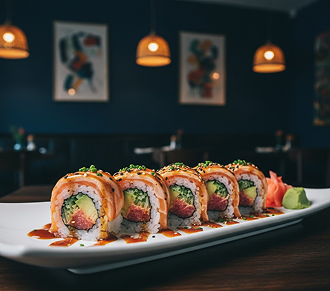
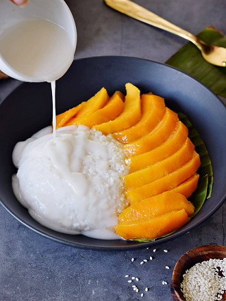
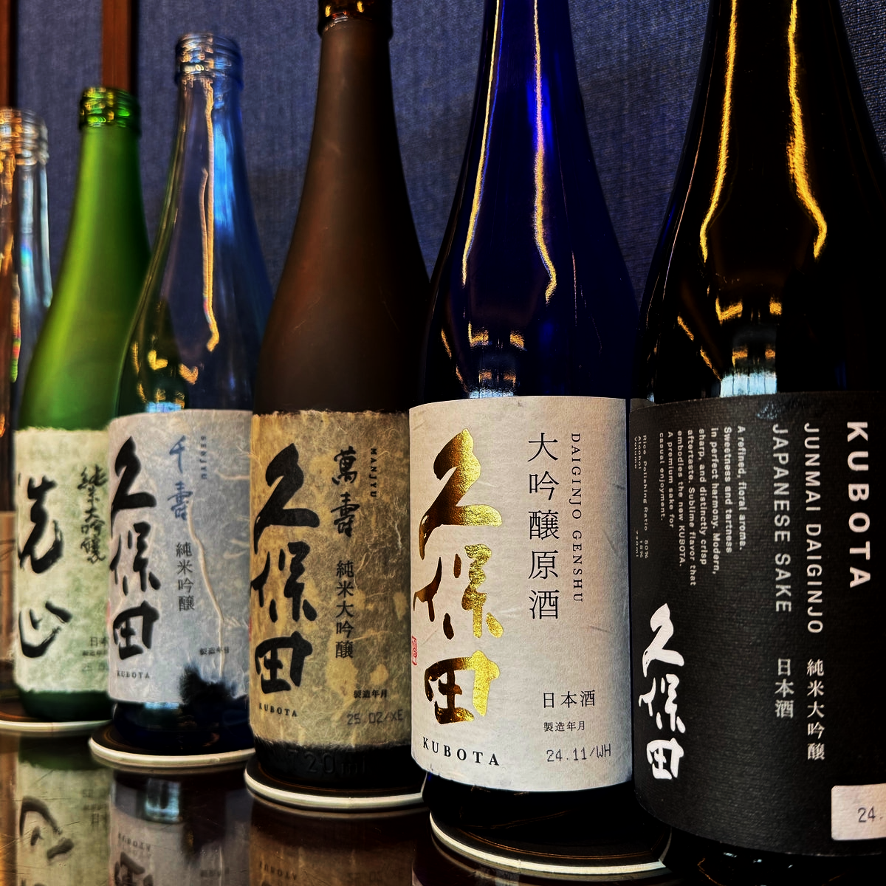

Dinner Menu
Appetizers
- Tuna Tataki
Lightly seared tuna, served with ponzu sauce and garnished with daikon and scallions - Thai Fish Cakes
Deep-fried fish patties with a side of cucumber relish - Vietnamese Grilled Pork Skewers
Marinated pork skewers, served with pickled vegetables and dipping sauce - Crab Rangoon
Crispy wontons stuffed with crab and cream cheese, served with sweet chili sauce - Shiso Tempura Shrimp
Crispy tempura shrimp wrapped in shiso leaves, served with soy dipping sauce

Salads
- Seaweed Salad
Fresh seaweed with sesame dressing - Papaya Salad (Som Tam)
Shredded green papaya with lime, peanuts, dried shrimp, and chili - House Salad
Mixed greens, cucumber, carrot, and daikon, with a sesame-ginger dressing - Grilled Thai Beef Salad (Yum Neua)
Grilled beef slices with fresh herbs, mixed greens, and lime dressing
Sushi and Sashimi
- Chef's Choice Sushi Platter
Selection of the freshest nigiri (10 pieces) and a tuna roll - Sashimi Platter
12 pieces of assorted sashmimi, served with wasabi and soy sauce

Speciality Rolls
- Ezo Signature Roll
Spicy tuna, avocado, cucumber, topped with seared salmon and miso glaze - Tropical Roll
Shrimp tempura, avocado, topped with mango, and drizzled with a pineapple chili sauce - Crispy Volcano Roll
Spicy crab mix and avocado, deep-fried and topped with eel sauce and spicy mayo - Shiso Garden Roll
Cucumber, avocado, pickled radish, and shiso leaf wrapped in soy paper (vegetarian)
Entrees
- Grilled Miso Black Cod
Cucumber, avocado, pickled radish, and shiso leaf wrapped in soy paper (vegetarian) - Pho with Wagyu Beef
Traditional Vietnamese pho broth with thin slices of wagyu beef, rice noodles, fresh herbs, and lime - Thai Green Curry
Creamy coconut curry with chicken, bamboo shoots, bell peppers, and Thai basil, served with jasmine rice - Tempura Udon
Thick udon noodles in a light dashi broth, served with shrimp tempura and scallions - Crispy Peking Duck
Slow-roasted duck, served with pancakes, hoisin sauce, and scallions

Desserts
- Mochi Ice Cream
Chewy rice cakes filled with mango, green tea, or strawberry ice cream - Coconut Sticky Rice with Mango
Sweet sticky rice served with ripe mango and coconut sauce drizzle - Match Cheesecake
Creamy green tea cheesecake with a crispy cookie crust - Lychee Sorbet
Light and refreshing lychee sorbet with fresh mint
Drinks
Craft Cocktails
- Lychee Martini
Vodka, lychee puree, and a splash of lime juice - Pandan Gin Fizz
Vodka, lychee puree, and a splash of lime juice - Pineapple Shiso Smash
Fresh pineapple, muddled shiso leaves, rum, and a hint of ginger syrup - Tokyo Mule
Vodka, ginger beer, lime, and yuzu

Sake Menu
Junmai (Pure Rice Sake)
- Hakkas on Junmai (Niigata)
Crisp and dry with subtle notes of rice and a clean finish - Shichida Junmai (Saga)
Full-bodied with rich umami flavor and mild acidity - Kikusui Junmai (Niigata)
Light and refreshing with subtle notes of melon and citrus
Junmai Ginjo (Premium Pure Rice Sake)
- Dassai 50 Junmai Ginjo (Yamaguchi)
Delicate and fragrant with hints of tropical fruit and peach - Suigei Tokubetsu Junmai Ginjo (Kochi)
Dry and clean, with bright acidity and a hint of grapefruit - Tedorigawa Junmai Ginjo "Lady Luck" (Ishikawa)
Bright and refreshing with aromas of white flowers and green apples
Daiginjo (Super Premium Sake)
- Kubota Manju Daiginjo (Niigata)
Elegant and silky with floral aromas and refined sweetness - Katsuyama Ken Daiginjo (Miyagi)
Rich and velvety with fruity notes of ripe pear and melon - Tatsuriki "Chotokusen" Daiginjo (Hyogo)
Luxurious and complex with subtle notes of lychee and pear
Nigori (Unfiltered Sake)
- Hakutsuru Sayuri Nigori (Hyogo)
Creamy and sweet with notes of coconut and vanilla - Shiro Sasa Nigori (Akita)
Thick and rich with bold sweetness and a hint of banana
Sparkling Sake
- Dassai Sparkling 50 (Yamaguchi)
Effervescent and refreshing with a crisp finish and fruity notes - Mio Sparkling Sake (Hyogo)
Lightly sparkling with sweet and fruity profile
Speciality Sake
- Eikun "The Sleeping Beauty" Junmai Daiginjo (Kyoto)
Delicate floral aroma and soft, silky texture - Isojiman Tokubetsu Junmai (Shizuoka)
Fresh and crisp with mineral-driven finish
Beer
- Asahi
- Sapporo
- Singha
- Tsingtao